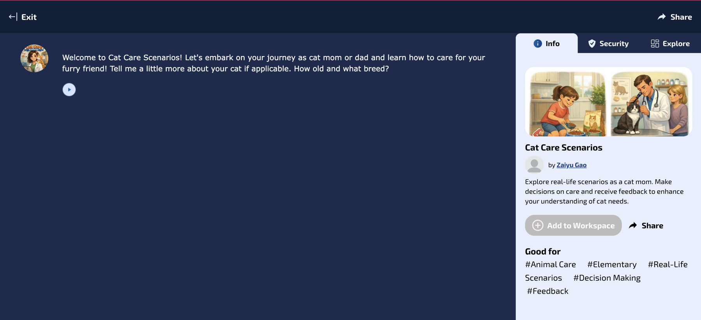
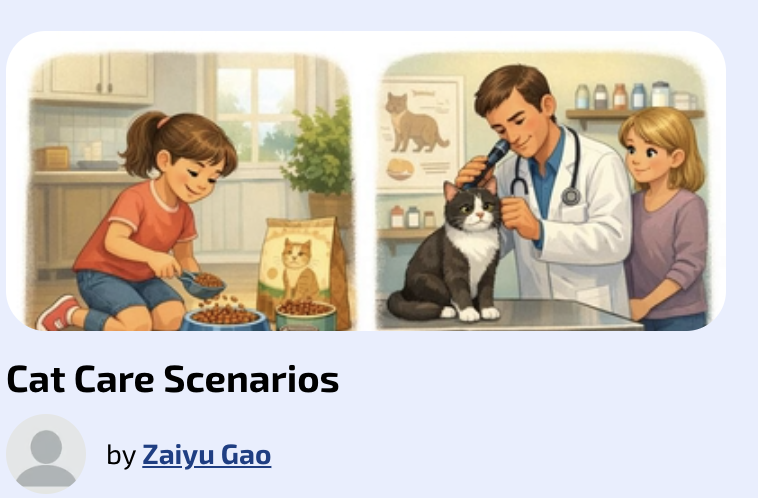

01Introduction
This project started with my own experience. When I became a cat mom, I didn't really know what was best for my cat, and I made a lot of mistakes along the way. The information I found online was scattered and often contradictory, and I wished I had one place to ask simple questions and get answers that fit my cat.
For an AI Lab exercise in my MS in Artificial Intelligence program, I built the assistant I wish I'd had: Cat Care Scenarios, a friendly, patient guide for the everyday questions new cat owners actually have.
02Description
Cat Care Scenarios is a conversational AI chatbot I built on Mizou, a platform for creating custom AI chatbots. I shaped it with my own set of instructions (a system prompt). Users explore real-life situations as a new cat mom or dad, make decisions about care and get feedback. It covers four areas:
- Behavior: what scratching, hiding, meowing and body language mean
- Feeding: routines and portions that match the cat's age
- Grooming: brushing, nail care and other basics
- Play: keeping a cat active, engaged and happy
Instead of handing out generic advice, the bot first gets to know the cat, then asks open-ended questions to understand the situation, and finally gives short, practical steps.
03Objective
I created this artifact to learn how to design and refine a conversational AI tool for a specific audience. My goals were to:
- Practice prompt engineering by turning a real user need into clear bot instructions
- Learn how to test and improve a chatbot through repeated iterations
- Build something genuinely useful for people in the situation I was once in
04Process
I started with a basic version, tested it by role-playing as a first-time cat owner, and revised the prompt each time the conversation fell short. It took three versions to get there:
Getting to know the cat
Letting owners tell their story
Keeping it simple
05The bot in action
The final prompt is built on three core instructions, one from each iteration:
Know the cat first
Start by asking the cat's breed and age.
Ask, then advise
Use open-ended questions to understand the situation and how serious it is.
Keep it short
A few clear, actionable steps, with more detail only on request.
The live bot on Mizou. Following the Version 1 change, it opens by welcoming the new owner and asking about the cat's age and breed:

Chat with Cat Care Scenarios ↗

06Tools & technologies
07Value proposition
This artifact shows that I can take a real user problem and turn it into a working AI tool, then improve it based on how people actually use it. Each version solved a specific gap I saw in testing: personalization, conversation and readability.
It reflects how I approach data and AI work in general: start with the user, test against real situations, and keep iterating until the tool is truly helpful, not just technically correct.
08Unique value
I built this bot from the user's side of the problem. As a former first-time cat mom, I knew the questions new owners are afraid to ask and how overwhelming too much information can feel. My marketing background shaped the design too: knowing your audience, meeting them where they are, and keeping the message simple are as important in a chatbot as in a campaign.
09Relevance
Conversational AI is quickly becoming how brands support and engage customers. The skills behind this project apply directly to marketing and customer experience work:
- Designing personalization: asking the right questions before recommending anything
- Writing and refining prompts that control an AI's tone, scope and format
- Testing an AI product against real user needs and improving it step by step
The same approach could power a pet brand's customer assistant, a product-recommendation bot, or an internal help tool for a marketing team.
10References
- Indiana Wesleyan University, MS in Artificial Intelligence: AI Lab course materials.
- Mizou. AI chatbot platform. mizou.com